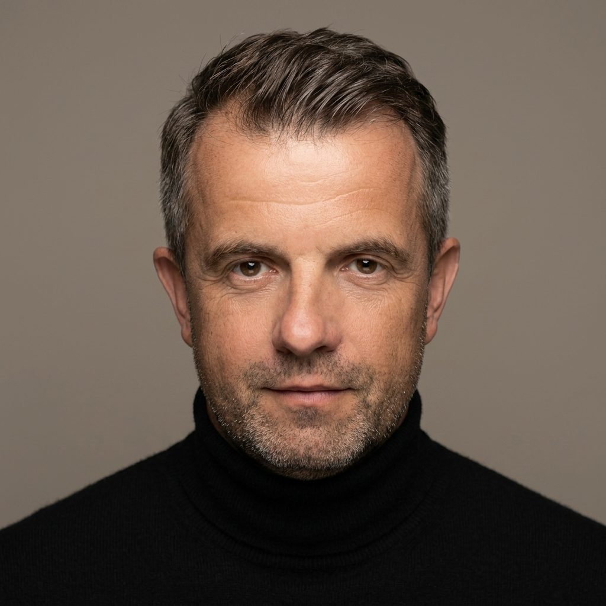

The person behind the lens

Photography is a mirror of personality.
The expressive power of a photograph depends on the photographer — their awareness, their feel for light and shadow, their ability to translate a visual idea into an image.
I look for situations I find compelling: exciting, original, mysterious. Cities, people, interesting environments — even a weathered wall in the right light becomes an image where structure, light and shadow compose into something harmonious.
The rest I leave to the viewer: to sense the mood, perhaps discover a symbol, give it their own meaning.
Photography is like music. It is not just about the instrument. What matters is the moment — the mood, the feeling that stays long after the shutter closes.
For over 20 years I have photographed people, places and moments across Europe. Weddings, concerts, architecture, landscapes — always with one goal: to make the real visible.
My aim has always been to find and present my own stylistic expression — individual, creative, shaped by international experience in and outside of Europe.
Dubrovnik — Croatia
March 7 – September 10, 1989
Mannheim
July 17 – October 1, 2007
Heidelberg
April 16 – November 8, 2005
Venezia
May 28 – November 26, 2009
SAP, Allianz, Ping, Bang & Olufsen, MLP, Janitos, Golf Club St. Leon Rot, Villa Elita, Grand Villa Argentina, Villa Seherezade, Tanner SE, Deutsche Kinderkrebsstiftung, ORF, Wiener Tageszeitung, Julian Rachlin, Golf Magazin Journal, John Malkovich, Sir Roger Moore, Janine Jansen, Mischa Maisky, Pavel Verikov, Boris Andrianov, Leif Ove Andsnes, Lawrence Power, Udo Jürgens, Harlem Gospel Singers, etc.
What people say
— Sandra
"The photos captured exactly the feeling of that day — light, laughter, everything. We look at them and we're right back there."
— Marcus
"Working with Dubo is always effortless. He creates an atmosphere where you forget there's a camera — and somehow that's exactly when the real moments happen."
— Katrin
"Every time we work together it's a genuine pleasure. He has this rare ability to make people feel at ease — and it shows in every single image."
— Thomas
"The atmosphere he creates on set is something special. Calm, focused, and a lot of fun — you always want to do it again."